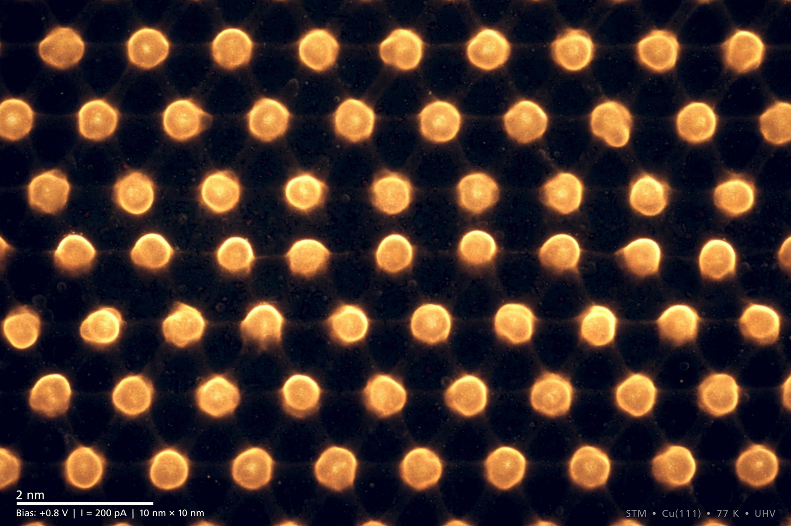

| Nanotechnology | |
|---|---|
 | |
| Scale | 1–100 nanometres |
| Key concepts | Self-assembly, quantum effects, nanomaterials |
| Origin | Richard Feynman lecture, 1959 |
| Term coined | Norio Taniguchi, 1974 |
Nanotechnology (or "nanotech") is the manipulation of matter with at least one dimension sized from 1 to 100 nanometres (nm). At this scale, surface-area and quantum-mechanical effects dominate, so materials acquire properties — colour, strength, conductivity, reactivity — very different from their bulk forms. Nanotechnology is inherently interdisciplinary, spanning physics, chemistry, biology, materials science and engineering.
The field traces its conceptual origin to Richard Feynman's 1959 lecture "There's Plenty of Room at the Bottom", which imagined building machines atom by atom. Norio Taniguchi coined the term in 1974; K. Eric Drexler popularised the vision of molecular nanotechnology and self-replicating assemblers in Engines of Creation (1986). Practical milestones include the invention of the scanning tunnelling microscope (1981), the discovery of fullerenes (1985) and carbon nanotubes (1991), and the isolation of graphene (2004).
Commercial nanotechnology already includes nanoparticle sunscreens and coatings, stain-resistant fabrics, ever-smaller semiconductor transistors, quantum-dot displays, and nanomedicine — such as the lipid nanoparticles that deliver mRNA vaccines. Research fronts include targeted drug delivery, molecular electronics, nanoelectromechanical systems and water purification membranes.
The same properties that make nanoparticles useful raise questions about toxicity and environmental fate; inhaled engineered nanoparticles, for example, can reach deep into the lungs. Drexler's "grey goo" scenario of runaway self-replication is widely regarded as speculative, but regulators in the EU and elsewhere treat nanomaterials as a distinct category requiring assessment.